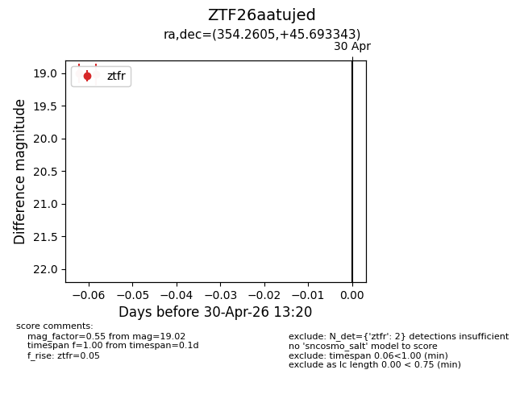
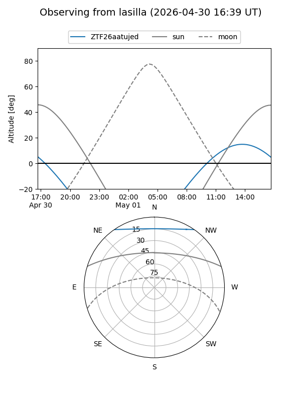
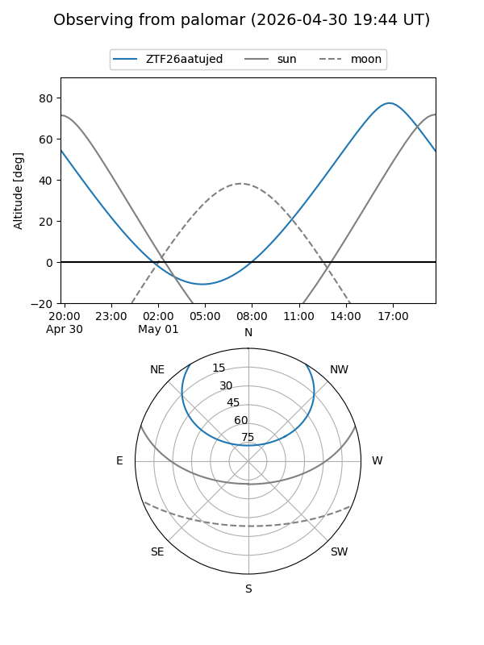

ZTF26aatujed
Target ZTF26aatujed at 2026-04-30 13:25
Aliases and brokers:
FINK: link
Lasair: link
ALeRCE: link
alt names
ZTF26aatujed (ztf,fink_ztf)
Coordinates:
equatorial (ra, dec) = 354.2605,+45.69334
equatorial (HMS+DMS) = 23:37:02.53,+45:41:36.03
galactic (l, b) = (109.5818,-15.24111)
Flags:
Photometry:
last ztfr=19.02
2 ztfr detections
Lightcurve

Visibility


Additional plots